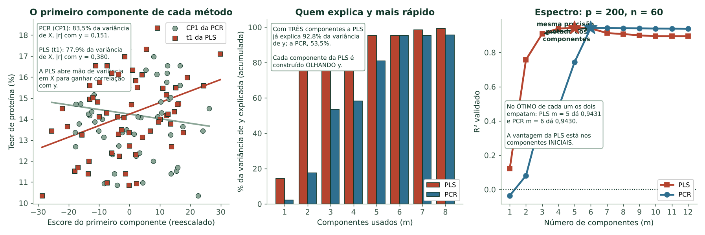
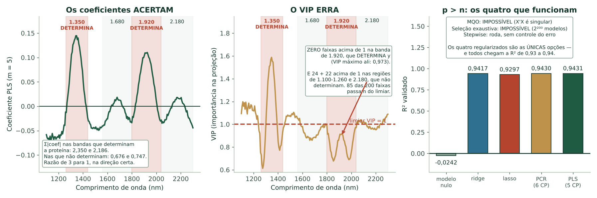

Regressão por mínimos quadrados parciais (PLS)
Constrói componentes que maximizam a covariância com a resposta, alcançando a mesma precisão da PCR com cerca de metade deles — o método que nasceu para espectros com p > n.
Comece por aqui
A PLS resolve o defeito da PCR com uma mudança mínima: em vez de construir os componentes olhando apenas \(X\), constrói-os maximizando a covariância com \(y\). Cada componente é, assim, relevante por construção. O método nasceu na quimiometria, para calibrar instrumentos a partir de espectros com centenas de canais e poucas dezenas de amostras, e é ali que a vantagem dele aparece com clareza.
No conjunto espectral, a PLS com três componentes alcança \(R^2\) validado de 0,9094, enquanto a PCR com três componentes alcança 0,4412 e precisa de seis para igualar. Mas no ótimo de cada método os dois praticamente empatam: PLS com \(m=5\) dá EQM 0,1987 e PCR com \(m=6\) dá 0,1991. A PLS não atinge um erro menor; ela chega ao mesmo erro com menos componentes.
O que é a PLS
Em cada passo, a PLS escolhe o vetor de pesos \(w\) que maximiza \(|\operatorname{cov}(Xw,y)|\) sob \(\|w\|=1\), calcula o escore \(t=Xw\), regride \(y\) nele, e então deflaciona \(X\) e \(y\) — subtrai deles a parte explicada por \(t\) — antes de repetir nos resíduos. A deflação garante que os escores sejam ortogonais, como na PCR, mas a direção de cada um é determinada pela resposta.

| Quantidade | PCR (CP1) | PLS (t1) |
|---|---|---|
| % da variância de X capturada | 83,54 | 77,93 |
| % da variância de y capturada | 2,29 | 14,43 |
| |r| com o teor de proteína | 0,1512 | 0,3799 |
| O que otimiza | variância de X | covariância com y |
A PLS abre mão de 5,6 pontos percentuais de variância do espectro — 77,93% contra 83,54% — e em troca mais que duplica a correlação com a resposta. É a única diferença entre os dois métodos, e explica tudo o que vem depois.
Pressupostos e como verificá-los
| Pressuposto | Por que importa | Como verificar |
|---|---|---|
| Variáveis padronizadas | Os pesos dependem da escala. | scale = TRUE no pacote pls. |
| m escolhido por validação cruzada | Mais componentes levam ao MQO. | validation = "CV"; examine validationplot. |
| m reescolhido dentro de cada dobra ao avaliar | Fixar m na amostra inteira é otimista. | Validação cruzada aninhada. |
| Linearidade na média | A PLS é um modelo linear. | Resíduos contra ajustados. |
| Observações independentes | A validação cruzada pressupõe isso. | Com agrupamento, valide por grupo. |
| Não se espera seleção de variáveis | Todas as p continuam no modelo. | Use lasso para selecionar. |
| VIP tratado como convenção | Não há valor-p associado ao limiar 1. | Veja a verificação desta ficha. |
| Pré-processamento espectral adequado | Deriva de linha de base compete com o sinal. | SNV, MSC, derivadas de Savitzky-Golay antes. |
A PLS constrói os componentes usando \(y\). Isso significa que, ao avaliar o erro por validação cruzada, a construção dos componentes tem de ser refeita dentro de cada dobra — exatamente como a seleção de variáveis no stepwise. Se os componentes forem calculados uma vez com todos os dados e só a regressão for validada, a estimativa é otimista pelo mesmo mecanismo. O pacote pls com validation = "CV" faz a coisa certa; uma implementação artesanal pode não fazer.
Formulação e cálculo
O algoritmo NIPALS, com \(X_0=X\) padronizado e \(y_0=y-\bar y\). Para \(a=1,\dots,m\):
Em que:
- \(w_a\)
- vetor de pesos do componente \(a\): a direção de maior covariância com o resíduo de \(y\)
- \(t_a\)
- escore do componente \(a\)
- \(p_a\)
- carga: a projeção de \(X\) sobre o escore
- \(q_a\)
- coeficiente da regressão de \(y\) no escore
- \(W_m,P_m\)
- matrizes dos pesos e das cargas
- \(R_m\)
- matriz que leva os pesos aos coeficientes na escala original
A deflação é o que distingue \(w_a\) de \(p_a\) e torna os escores ortogonais. O passo \(w_a\propto X^{\top}y\) é o ponto inteiro do método: ele é a direção que maximiza \(|\operatorname{cov}(Xw,y)|\) sob norma unitária, enquanto a PCR usaria a direção que maximiza \(\operatorname{Var}(Xw)\).
Exemplo numérico: o primeiro componente, passo a passo
| Quantidade | Valor |
|---|---|
| \(\|X^{\top}y\|\) antes de normalizar | 348,11 |
| \(\|w_1\|\) depois de normalizar | 1,0000 |
| Variância do escore \(t_1\) | 69,0160 |
| \(\|p_1\|\) | 1,5028 |
| \(q_1=y^{\top}t_1/t_1^{\top}t_1\) | 0,0855 |
| \(r(t_1,y)\) | 0,3799 |
| % da variância de X em \(t_1\) | 77,93 |
| % da variância de y em \(t_1\) | 14,43 |
Quando \(m\) iguala o posto de \(X\), os escores geram o mesmo espaço coluna que \(X\), e a PLS recupera exatamente os mínimos quadrados. Nos dados de solo, com posto 12, a maior diferença entre os doze coeficientes calculados pelos dois caminhos é de 0,0000000000. O mesmo vale para a PCR.
A consequência é a mesma das demais fichas do grupo: a PLS é um caminho entre o modelo nulo (\(m=0\)) e o MQO (\(m=\text{posto}\)), e escolher \(m\) é escolher o grau de regularização. Um relato que diga "usamos PLS" sem informar \(m\) não informou nada.
Propriedades
- Os escores são ortogonais, como na PCR, mas as direções dependem de \(y\).
- \(m=\text{posto}(X)\) devolve o MQO; \(m=0\) devolve a média de \(y\).
- Cada componente maximiza \(|\operatorname{cov}(Xw,y)|\) sob \(\|w\|=1\), no resíduo do passo anterior.
- Não produz zeros: todas as \(p\) variáveis recebem coeficiente não nulo.
- Funciona com \(p>n\), e é o regime em que foi concebida.
- Aceita múltiplas respostas (PLS2) e versões para classificação (PLS-DA).
- Fica entre o MQO e a PCR no espectro de regularização (Frank e Friedman, 1993).
- Depende da escala: exige padronização quando as unidades diferem.
Como interpretar os resultados
| Elemento | O que informa | Cuidado |
|---|---|---|
summary(ml) — duas linhas | Variância explicada de X e de y. | Compare com a PCR: a diferença é o método. |
validationplot | O erro validado por m. | É o critério de escolha. |
RMSEP | A raiz do erro quadrático validado. | Eleve ao quadrado para comparar com EQM. |
coef(ml, ncomp = m) | Coeficientes na escala original. | Nenhum é zero. |
loading.weights (W) | As direções escolhidas olhando y. | Não confundir com as cargas P. |
loadings (P) | A projeção de X sobre os escores. | Usadas na deflação. |
scores (T) | A posição de cada amostra. | Úteis para detectar atípicas. |
| VIP | Convenção de importância. | Verifique antes de confiar — veja abaixo. |
A regra "VIP > 1", posta à prova
O VIP (variable importance in projection) é a medida de importância convencional na quimiometria, e o limiar 1 decorre de o VIP quadrático médio ser 1 por construção. Como neste espectro se sabe quais bandas determinam a resposta, é possível verificar se a regra funciona — e o resultado não a favorece.
| Região (nm) | Faixas | VIP médio | VIP máx. | VIP > 1 | Σ|coef| | Determina y? |
|---|---|---|---|---|---|---|
| 1.100–1.260 | 27 | 1,102 | 1,198 | 24 | 1,583 | não |
| 1.350 | 30 | 1,089 | 1,588 | 15 | 2,350 | SIM |
| 1.500 (linha de base) | 20 | 1,061 | 1,105 | 18 | 0,853 | não |
| 1.680 | 40 | 0,938 | 1,051 | 5 | 0,676 | não |
| 1.920 | 39 | 0,812 | 0,973 | 0 | 2,186 | SIM |
| 2.180 | 43 | 1,001 | 1,084 | 22 | 0,747 | não |
Os coeficientes somam 2,350 e 2,186 em valor absoluto nas duas bandas que determinam a proteína, contra 0,676 e 0,747 nas duas que não determinam — razão de cerca de três para um, na direção correta. O VIP, ao contrário, aponta 24 faixas acima de 1 na região de 1.100–1.260 nm e 22 na de 2.180 nm, nenhuma das quais determina a resposta, e aponta zero faixas na região de 1.920 nm, que determina: o VIP máximo ali é 0,973, abaixo do limiar. É um falso negativo completo sobre uma banda causal, acompanhado de dezenas de falsos positivos. E a regra selecionou 85 das 200 faixas — quase metade — o que por si indica que não está discriminando.
A razão é estrutural, e é a mesma que aparece nas demais fichas do grupo. O VIP é construído a partir dos pesos \(w\), que se concentram onde o produto variância-por-covariância é maior. As colunas vizinhas do espectro têm \(r=0{,}998\), de modo que uma região serve de procuração para outra: a banda de 1.350 nm, com \(r=0{,}6503\) contra a resposta, absorve o peso da de 1.920 nm, que tem \(r=0{,}3560\). É o fenômeno da argila e da areia nos dados de solo, em outra escala — com colunas quase redundantes, não há como atribuir a importância a uma e não à outra.
Como executar no R e em Python
Onde executar o código em Python
Não é preciso instalar nada: o Google Colab é um computador na nuvem, gratuito, que executa Python pelo navegador e já traz as bibliotecas usadas aqui (numpy, scipy e matplotlib).
A função plsr do pacote pls tem a mesma interface do lm e da pcr da ficha anterior, o que facilita a comparação. scale = TRUE padroniza; validation = "CV" com segments = 10 faz a validação cruzada refazendo os componentes em cada dobra, que é o comportamento correto. summary() imprime as duas linhas de variância explicada — a de \(X\) e a de \(y\) — e é na segunda que a vantagem sobre a PCR aparece. Quando \(X\) é uma matriz larga, convém passá-la como coluna-matriz em um data.frame com I(), como no código. O argumento method escolhe o algoritmo: "kernelpls" (padrão, rápido para \(p\) grande), "oscorespls" e "simpls", todos equivalentes para uma resposta. Para várias respostas simultâneas, basta dar uma matriz como resposta (PLS2). Para discriminação, caret::train(method = "pls") ou o pacote mixOmics.
library(pls)
dados <- data.frame(proteina = ye, Xe = I(Xe))
ml <- plsr(proteina ~ Xe, data = dados, validation = "CV", segments = 10)
summary(ml) # compare as duas linhas de variância explicada
validationplot(ml, val.type = "R2")
coef(ml, ncomp = 5)
Exemplo de aplicação
Contexto dos dados
O segundo conjunto, também fictício, é um espectro de reflectância no infravermelho próximo: 60 amostras, 200 comprimentos de onda entre 1.100 e 2.300 nm, e o teor de proteína (%) como resposta. Quatro bandas de absorção foram construídas, mas apenas duas determinam a proteína; a maior fonte de variação do espectro é uma deriva de linha de base sem relação com ela. Aqui p > n, e os métodos clássicos de seleção deixam de ser aplicáveis.
Os dados são fictícios e foram criados pelo autor: 90 amostras de solo de uma área experimental, com a produtividade da cultura (t/ha) e doze variáveis candidatas de análise de rotina — pH, matéria orgânica, fósforo resina, potássio, cálcio, magnésio, alumínio, CTC, saturação por bases (V%), argila, silte e areia. O processo gerador é conhecido e usa apenas quatro delas: matéria orgânica, fósforo, V% e argila, com erro de desvio-padrão 0,60 t/ha. A colinearidade é deliberada e realista: argila, silte e areia somam aproximadamente 100% por construção física, e cálcio, magnésio e potássio estão ligados à CTC e ao V%. Saber qual é o modelo verdadeiro permite verificar se cada método o encontra — o que, em dados reais, nunca é possível. O mesmo conjunto atravessa as seis fichas do grupo.
Código em R
# Regressão por mínimos quadrados parciais (PLS): exemplo completo ----
# Pacotes: pls (função plsr)
# Dados fictícios: espectro NIR, 60 amostras, 200 comprimentos de onda.
# O arquivo espectro.csv acompanha o site, na pasta scripts/.
esp <- read.csv("espectro.csv")
dim(esp) # 60 x 201: proteina + nm1100 ... nm2300
Xe <- as.matrix(esp[, -1]); ye <- esp$proteina
qr(scale(Xe))$rank # 59: o posto é menor que o número de colunas
# ---- 1. A PLS no espectro, com validação cruzada
library(pls)
dados <- data.frame(proteina = ye, Xe = I(Xe))
ml <- plsr(proteina ~ Xe, data = dados, validation = "CV", segments = 10)
summary(ml) # DUAS linhas de variância explicada: X e proteina
validationplot(ml, val.type = "R2")
RMSEP(ml)
which.min(RMSEP(ml)$val[1, 1, -1]) # o m escolhido
# A comparação que interessa: PLS contra PCR, no mesmo conjunto
mp <- pcr(proteina ~ Xe, data = dados, validation = "CV", segments = 10)
cbind(PLS = drop(RMSEP(ml)$val)[1:13], PCR = drop(RMSEP(mp)$val)[1:13])
# A PLS chega a um erro útil com cerca de METADE dos componentes.
# ---- 2. O algoritmo NIPALS, passo a passo (um componente)
Ep <- scale(Xe); yc <- ye - mean(ye)
w1 <- t(Ep) %*% yc; w1 <- w1/sqrt(sum(w1^2)) # direção de maior COVARIÂNCIA
t1 <- Ep %*% w1
p1 <- t(Ep) %*% t1/sum(t1^2) # a carga
q1 <- sum(yc*t1)/sum(t1^2)
cor(t1, ye) # |r| do escore com y
sum(t1^2*sum(p1^2))/sum(Ep^2) # fração da variância de X
# Deflação, e repete-se nos resíduos:
Ep2 <- Ep - t1 %*% t(p1); yc2 <- yc - q1*t1
# Para comparar, o primeiro componente PRINCIPAL do mesmo espectro:
cp1 <- svd(Ep)$u[, 1]
cor(cp1, ye) # muito menor
# A PLS abre mão de variância em X para ganhar correlação com y.
# ---- 3. PLS com m = posto(X) é o MQO
# Dados fictícios: 90 amostras de solo, 12 candidatas.
# O arquivo solo.csv acompanha o site, na pasta scripts/.
solo <- read.csv("solo.csv")
str(solo) # y (t/ha) e as 12 candidatas
dim(solo)
# O modelo VERDADEIRO (conhecido por construção) usa só quatro:
# y = 4,00 + 0,80*mo + 0,0250*pres + 0,0300*v + 0,0200*argila + erro
cand <- c("ph","mo","pres","k","ca","mg","al","ctc","v","argila","silte","areia")
verdadeiras <- c("mo","pres","v","argila")
# A colinearidade, que é o problema central do grupo
library(car)
vif(lm(y ~ ., data = solo))
round(cor(solo[, cand]), 2)
Xs <- scale(as.matrix(solo[, cand]))
ms <- plsr(solo$y ~ Xs, ncomp = 12)
max(abs(drop(coef(ms, ncomp = 12)) - coef(lm(y ~ ., data = solo))[-1]*apply(solo[, cand], 2, sd)))
# ---- 4. E quando a colinearidade é apenas moderada? (solo)
m1 <- plsr(y ~ ., data = solo, scale = TRUE, validation = "CV", segments = 10)
m2 <- pcr(y ~ ., data = solo, scale = TRUE, validation = "CV", segments = 10)
cbind(PLS = drop(RMSEP(m1)$val)^2, PCR = drop(RMSEP(m2)$val)^2)
# Aqui a PLS não tem vantagem: o MQO já funciona.
# ---- 5. OS PESOS: coeficientes contra VIP
b <- drop(coef(ml, ncomp = 5))
W <- ml$loading.weights[, 1:5]; Tt <- ml$scores[, 1:5]
q <- drop(ml$Yloadings)[1:5]
ss <- q^2*colSums(Tt^2)
VIP <- sqrt(ncol(Xe)*rowSums(sweep(W^2, 2, ss, "*"))/sum(ss))
lam <- as.numeric(sub("nm", "", colnames(Xe)))
# As bandas CONSTRUÍDAS: 1.350 e 1.920 determinam a proteína; 1.680 e
# 2.180 não. Qual das duas medidas acerta?
for (r in list(c(1100,1260,"nao"), c(1260,1440,"SIM"), c(1440,1560,"nao"),
c(1560,1800,"nao"), c(1800,2040,"SIM"), c(2040,2300,"nao"))) {
m <- lam >= as.numeric(r[1]) & lam < as.numeric(r[2])
cat(sprintf("%4s-%4s nm: VIP medio %.3f, acima de 1: %2d, soma|coef| %.3f determina: %s\n",
r[1], r[2], mean(VIP[m]), sum(VIP[m] > 1), sum(abs(b[m])), r[3]))
}
sum(VIP > 1) # 85 das 200: a regra "VIP > 1" não discrimina aqui
mean(VIP^2) # é sempre 1 por construção
# ---- 6. Para classificação e múltiplas respostas
# plsr aceita matriz de respostas (PLS2); para discriminação, ver
# caret::train(method = "pls") ou o pacote mixOmics (PLS-DA).
A mesma análise em Python, com os resultados
Cole o código em um notebook do Google Colab ↗ e execute com Shift+Enter. Os valores abaixo são a saída desse código.
import numpy as np
# ------------------------------------------------------------------
# Bloco comum às fichas deste grupo: funções auxiliares e dados (cab14)
# ------------------------------------------------------------------
import numpy as np, itertools
# ------------------------------------------------------------------
# Bloco comum às fichas deste grupo: funções auxiliares e dados (dados14)
# ------------------------------------------------------------------
import numpy as np
import pandas as pd
def le_csv(nome):
"""Lê o arquivo de dados da ficha: primeiro na pasta atual; se não
estiver lá (por exemplo, no Google Colab), direto do site."""
try:
return pd.read_csv(nome)
except FileNotFoundError:
return pd.read_csv('https://cassiushenrique.github.io/ModelosEstatisticos/scripts/' + nome)
# Dados fictícios: 90 amostras de solo (arquivo solo.csv, pasta scripts/ do site)
solo = le_csv('solo.csv')
NOMES=['ph', 'mo', 'pres', 'k', 'ca', 'mg', 'al', 'ctc', 'v', 'argila', 'silte', 'areia']
ROT={'ph':'pH','mo':'M.O.','pres':'P (resina)','k':'K','ca':'Ca','mg':'Mg','al':'Al','ctc':'CTC','v':'V%','argila':'Argila','silte':'Silte','areia':'Areia'}
X=solo[NOMES].to_numpy(float); Y=solo['y'].to_numpy(float)
VERD={"mo":0.80,"pres":0.0250,"v":0.0300,"argila":0.0200}
N,P=X.shape
# ------------------------------------------------------------------ fim do bloco comum
def pad(A, mu=None, sd=None):
"""Padroniza colunas (média 0, desvio 1, com n-1)."""
if mu is None: mu = A.mean(0)
if sd is None: sd = A.std(0, ddof=1)
sd = np.where(sd < 1e-12, 1.0, sd)
return (A - mu)/sd, mu, sd
def ols(A, y):
Ad = np.column_stack([np.ones(len(A)), A])
return np.linalg.lstsq(Ad, y, rcond=None)[0]
def prev(A, b):
return b[0] + A @ b[1:]
def sqr(obs, p_): return float(np.sum((obs - p_)**2))
def eqm(obs, p_): return float(np.mean((obs - p_)**2))
def ridge(A, y, lam):
"""Ridge em A JÁ padronizado; não penaliza o intercepto."""
n_, p_ = A.shape
G = A.T @ A + lam*n_*np.eye(p_)
b = np.linalg.solve(G, A.T @ (y - y.mean()))
return np.concatenate([[y.mean()], b])
def lasso(A, y, lam, it=20000, tol=1e-11):
"""Descida por coordenadas em A JÁ padronizado (Friedman et al., 2010)."""
n_, p_ = A.shape
b = np.zeros(p_); r = y - y.mean()
nrm = (A**2).sum(0)/n_
for _ in range(it):
mx = 0.0
for j in range(p_):
bj = b[j]
rho = A[:, j] @ (r + A[:, j]*bj)/n_
nb = np.sign(rho)*max(abs(rho) - lam, 0.0)/nrm[j]
if nb != bj:
r = r - A[:, j]*(nb - bj); b[j] = nb
mx = max(mx, abs(nb - bj))
if mx < tol: break
return np.concatenate([[y.mean()], b])
def pcr(A, y, m):
"""Regressão nos m primeiros componentes principais de A padronizado."""
u, s, vt = np.linalg.svd(A, full_matrices=False)
T = (u*s)[:, :m]
g = np.linalg.lstsq(T, y - y.mean(), rcond=None)[0]
b = vt[:m].T @ g
return np.concatenate([[y.mean()], b])
def pls(A, y, m):
"""NIPALS para uma resposta; devolve coeficientes na escala de A."""
Xr = A.copy(); yr = y - y.mean()
W = np.zeros((A.shape[1], m)); Pm = np.zeros((A.shape[1], m)); q = np.zeros(m)
for a in range(m):
w = Xr.T @ yr; w = w/np.linalg.norm(w)
t = Xr @ w; tt = t @ t
pj = Xr.T @ t/tt; qa = (yr @ t)/tt
Xr = Xr - np.outer(t, pj); yr = yr - qa*t
W[:, a] = w; Pm[:, a] = pj; q[a] = qa
Rm = W @ np.linalg.inv(Pm.T @ W)
b = Rm @ q
return np.concatenate([[y.mean()], b])
def dobras(n_, k, seed):
rg = np.random.default_rng(seed)
d = np.tile(np.arange(k), int(np.ceil(n_/k)))[:n_]
rg.shuffle(d); return d
def cv(ajusta, A, y, k=10, seed=0, reps=1):
"""EQM por validação cruzada; TODA a padronização dentro do laço."""
tot = []
for r in range(reps):
d = dobras(len(y), k, seed + 1000*r); e = np.empty(len(y))
for j in range(k):
tr, te = d != j, d == j
Ap, mu, sd = pad(A[tr])
b = ajusta(Ap, y[tr])
e[te] = y[te] - prev((A[te] - mu)/sd, b)
tot.append(float(np.mean(e**2)))
return float(np.mean(tot)), float(np.std(tot, ddof=1)) if reps > 1 else 0.0
def crit(A, y, cols, s2):
"""Cp de Mallows, AIC e BIC de um submodelo."""
Ad = np.column_stack([np.ones(len(A))] + [A[:, j] for j in cols])
b = np.linalg.lstsq(Ad, y, rcond=None)[0]
sq = sqr(y, Ad @ b); n_, d = len(y), len(cols) + 1
return dict(sqr=sq, p=d, r2=1 - sq/np.sum((y - y.mean())**2),
r2a=1 - (sq/(n_ - d))/(np.sum((y - y.mean())**2)/(n_ - 1)),
cp=sq/s2 - n_ + 2*d,
aic=n_*np.log(sq/n_) + 2*d, bic=n_*np.log(sq/n_) + np.log(n_)*d)
def vif(A):
Ap, _, _ = pad(A); out = []
for j in range(A.shape[1]):
o = [i for i in range(A.shape[1]) if i != j]
b = ols(Ap[:, o], Ap[:, j]); r = Ap[:, j] - prev(Ap[:, o], b)
out.append(1/(1 - (1 - r @ r/np.sum((Ap[:, j] - Ap[:, j].mean())**2))))
return np.array(out)
def c(v, d=4):
return ('%.*f' % (d, v)).replace('.', ',')
def lasso_path(A, y, lams, it=5000, tol=1e-10):
"""Caminho do lasso com partida quente (como o glmnet). lams DECRESCENTE."""
n_, p_ = A.shape
b = np.zeros(p_); r = y - y.mean(); nrm = (A**2).sum(0)/n_
out = []
for lam in lams:
for _ in range(it):
mx = 0.0
for j in range(p_):
bj = b[j]
rho = A[:, j] @ (r + A[:, j]*bj)/n_
nb = np.sign(rho)*max(abs(rho) - lam, 0.0)/nrm[j]
if nb != bj:
r = r - A[:, j]*(nb - bj); b[j] = nb
mx = max(mx, abs(nb - bj))
if mx < tol: break
out.append(np.concatenate([[y.mean()], b.copy()]))
return out
def enet_path(A, y, lams, al, it=5000, tol=1e-10):
n_, p_ = A.shape
b = np.zeros(p_); r = y - y.mean(); nrm = (A**2).sum(0)/n_
out = []
for lam in lams:
for _ in range(it):
mx = 0.0
for j in range(p_):
bj = b[j]
rho = A[:, j] @ (r + A[:, j]*bj)/n_
nb = np.sign(rho)*max(abs(rho) - lam*al, 0.0)/(nrm[j] + lam*(1 - al))
if nb != bj:
r = r - A[:, j]*(nb - bj); b[j] = nb
mx = max(mx, abs(nb - bj))
if mx < tol: break
out.append(np.concatenate([[y.mean()], b.copy()]))
return out
def cv_path(ajusta_path, A, y, lams, k=10, seed=0, reps=1):
"""EQM por VC para TODA a grade de lambda de uma vez, com partida quente."""
acc = np.zeros((reps, len(lams)))
for rp in range(reps):
d = dobras(len(y), k, seed + 1000*rp); E = np.zeros((len(lams), len(y)))
for j in range(k):
tr, te = d != j, d == j
Ap, mu, sd = pad(A[tr])
bs = ajusta_path(Ap, y[tr], lams)
Ate = (A[te] - mu)/sd
for i, b in enumerate(bs): E[i, te] = y[te] - prev(Ate, b)
acc[rp] = (E**2).mean(1)
return acc.mean(0), acc.std(0, ddof=1) if reps > 1 else np.zeros(len(lams))
def _cd_gram(G, Ay, lam, al, b, dg, it=10000, tol=1e-11):
"""Descida por coordenadas usando a matriz de Gram: só escalares no laço."""
p_ = len(b)
for _ in range(it):
mx = 0.0
for j in range(p_):
bj = b[j]
rho = Ay[j] - (G[j] @ b - dg[j]*bj)
nb = np.sign(rho)*max(abs(rho) - lam*al, 0.0)/(dg[j] + lam*(1 - al))
if nb != bj:
b[j] = nb; mx = max(mx, abs(nb - bj))
if mx < tol: break
return b
def enet_path_g(A, y, lams, al=1.0):
"""Caminho da rede elástica (al=1 é o lasso) com Gram e partida quente."""
n_, p_ = A.shape
G = A.T @ A/n_; Ay = A.T @ (y - y.mean())/n_; dg = np.diag(G).copy()
b = np.zeros(p_); out = []
for lam in lams:
b = _cd_gram(G, Ay, lam, al, b, dg)
out.append(np.concatenate([[y.mean()], b.copy()]))
return out
def lasso_path_g(A, y, lams): return enet_path_g(A, y, lams, 1.0)
def _cd_ativo(G, Ay, lam, al, b, dg, it=200, tol=1e-11):
"""Descida por coordenadas com CONJUNTO ATIVO (estratégia do glmnet):
varre tudo, depois itera só nos coeficientes não nulos."""
p_ = len(b)
for _ in range(it):
# varredura completa
mx = 0.0
for j in range(p_):
bj = b[j]
rho = Ay[j] - (G[j] @ b - dg[j]*bj)
nb = np.sign(rho)*max(abs(rho) - lam*al, 0.0)/(dg[j] + lam*(1 - al))
if nb != bj:
b[j] = nb; mx = max(mx, abs(nb - bj))
ativo = np.flatnonzero(b)
if len(ativo) == 0 or mx < tol: break
Ga = G[np.ix_(ativo, ativo)]; Aya = Ay[ativo]; dga = dg[ativo]
ba = b[ativo].copy()
for _ in range(2000):
mxa = 0.0
for i in range(len(ativo)):
bi = ba[i]
rho = Aya[i] - (Ga[i] @ ba - dga[i]*bi)
nb = np.sign(rho)*max(abs(rho) - lam*al, 0.0)/(dga[i] + lam*(1 - al))
if nb != bi:
ba[i] = nb; mxa = max(mxa, abs(nb - bi))
if mxa < tol: break
b[ativo] = ba
if mx < tol: break
return b
def enet_path_a(A, y, lams, al=1.0):
n_, p_ = A.shape
G = A.T @ A/n_; Ay = A.T @ (y - y.mean())/n_; dg = np.diag(G).copy()
b = np.zeros(p_); out = []
for lam in lams:
b = _cd_ativo(G, Ay, lam, al, b, dg)
out.append(np.concatenate([[y.mean()], b.copy()]))
return out
def lasso_path_a(A, y, lams): return enet_path_a(A, y, lams, 1.0)
# ------------------------------------------------------------------ fim do bloco comum
# ------------------------------------------------------------------
# Bloco comum às fichas deste grupo: funções auxiliares e dados (dados14b)
# ------------------------------------------------------------------
import numpy as np
import pandas as pd
def le_csv(nome):
"""Lê o arquivo de dados da ficha: primeiro na pasta atual; se não
estiver lá (por exemplo, no Google Colab), direto do site."""
try:
return pd.read_csv(nome)
except FileNotFoundError:
return pd.read_csv('https://cassiushenrique.github.io/ModelosEstatisticos/scripts/' + nome)
# Dados fictícios: 60 espectros NIR de 200 bandas (arquivo espectro.csv)
esp = le_csv('espectro.csv')
LAM=np.round(np.linspace(1100,2300,200),1) # comprimentos de onda (nm)
XE=esp.drop(columns='proteina').to_numpy(float); YE=esp['proteina'].to_numpy(float)
NE,PE=XE.shape
# ------------------------------------------------------------------ fim do bloco comum
Xp,mu,sd=pad(X); yc=Y-Y.mean()
Ep,emu,esd=pad(XE); yec=YE-YE.mean()
vye=float(YE.var(ddof=1)); vy=float(Y.var(ddof=1))
print('A PLS foi criada para o problema do ESPECTRO: muitas variáveis')
print('fortemente correlacionadas, poucas amostras, e a maior fonte de variação')
print('das variáveis sem relação com a resposta. Os dois conjuntos da ficha pcr')
print('reaparecem aqui, e o contraste entre eles é o argumento central.')
print('\n'+'='*70)
print('O ALGORITMO NIPALS, o primeiro componente passo a passo (espectro)')
print()
Xr=Ep.copy(); yr=yec.copy()
w=Xr.T@yr
print(" w1 = X'y (direção de maior COVARIÂNCIA com y): norma %s"%c(float(np.linalg.norm(w)),2))
w=w/np.linalg.norm(w)
t=Xr@w; tt=float(t@t); pj=Xr.T@t/tt; q=float((yr@t)/tt)
print(' ||w1|| = %s, depois de normalizar'%c(float(np.linalg.norm(w))))
print(' t1 = X w1 (o escore): variância = %s'%c(float(t.var(ddof=1))))
print(" p1 = X't1/t1't1 (a carga): norma %s"%c(float(np.linalg.norm(pj))))
print(" q1 = y't1/t1't1 = %s"%c(q))
print(' r(t1, y) = %s'%c(float(np.corrcoef(t,yec)[0,1])))
print(' %% da variância de X capturada por t1 = %s'%c(100*float(tt*(pj@pj))/float(np.sum(Ep**2)),2))
print(' %% da variância de y capturada por t1 = %s'%c(100*q*q*tt/float(yec@yec),2))
print()
print("Em seguida X e y são DEFLACIONADOS (X <- X - t1 p1', y <- y - q1 t1) e o")
print('passo se repete nos resíduos, o que garante escores ortogonais.')
print()
eu,es,evt=np.linalg.svd(Ep,full_matrices=False); t1p=(eu*es)[:,0]
print('Para comparar, o primeiro componente PRINCIPAL do mesmo espectro:')
print('%-34s %12s %12s'%('','PCR (CP1)','PLS (t1)'))
print('%-34s %12s %12s'%('% da variância de X',c(100*float(es[0]**2/np.sum(es**2)),2),
c(100*float(tt*(pj@pj))/float(np.sum(Ep**2)),2)))
print('%-34s %12s %12s'%('|r| com a proteína',c(abs(float(np.corrcoef(t1p,YE)[0,1]))),
c(abs(float(np.corrcoef(t,YE)[0,1])))))
print()
print('A PLS abre mão de variância em X para ganhar correlação com y. É a única')
print('diferença entre os dois métodos, e explica tudo o que vem depois.')
print('\n'+'='*70)
print('(a) ESPECTRO: variância explicada componente por componente')
def decomp(A,y,m):
Xr=A.copy(); yr=y-y.mean(); vx=[];vy_=[]
for a in range(m):
w=Xr.T@yr; w=w/np.linalg.norm(w); t=Xr@w; tt=t@t
pp=Xr.T@t/tt; qa=(yr@t)/tt
vx.append(float(tt*(pp@pp)/np.sum(A**2))); vy_.append(float(qa*qa*tt/np.sum((y-y.mean())**2)))
Xr=Xr-np.outer(t,pp); yr=yr-qa*t
return np.array(vx),np.array(vy_)
vx,vyp=decomp(Ep,YE,10)
epv=es**2/np.sum(es**2)
r2pcr=[1-sqr(YE,prev(Ep,pcr(Ep,YE,m)))/float(np.sum((YE-YE.mean())**2)) for m in range(11)]
print()
print('%4s %26s %26s'%('','PLS','PCR'))
print('%4s %12s %13s %12s %13s'%('m','% var X','% var y','% var X','% var y'))
for m in range(10):
print('%4d %12s %13s %12s %13s'%(m+1,c(100*vx[m],2),c(100*vyp[m],2),
c(100*epv[m],2),c(100*(r2pcr[m+1]-r2pcr[m]),2)))
print('%4s %12s %13s %12s %13s'%('acum',c(100*vx.sum(),2),c(100*vyp.sum(),2),
c(100*epv[:10].sum(),2),c(100*r2pcr[10],2)))
print()
print('A PLS põe %s%% da variância de y nos TRÊS primeiros componentes; a PCR,'%c(100*vyp[:3].sum(),2))
print('nos três primeiros, explica %s%%. Em troca, a PCR captura mais'%c(100*r2pcr[3],2))
print('variância de X (%s%% contra %s%%), que é o que ela otimiza.'%(
c(100*epv[:3].sum(),2),c(100*vx[:3].sum(),2)))
print('\n'+'='*70)
print('(b) ESPECTRO: a validação cruzada decide (10 dobras, 5 repetições)')
print()
print('%4s %14s %14s %13s %13s'%('m','EQM PLS','EQM PCR','R² val PLS','R² val PCR'))
bp=bq=None; cvp={};cvq={}
for m in range(1,13):
a_,_=cv(lambda A,y,m=m: pls(A,y,m),XE,YE,10,0,5)
b_,_=cv(lambda A,y,m=m: pcr(A,y,m),XE,YE,10,0,5)
cvp[m]=a_; cvq[m]=b_
if bp is None or a_<bp[1]: bp=(m,a_)
if bq is None or b_<bq[1]: bq=(m,b_)
print('%4d %14s %14s %13s %13s'%(m,c(a_),c(b_),c(1-a_/vye),c(1-b_/vye)))
print()
print(' melhor PLS: m = %d, EQM %s, R² val %s'%(bp[0],c(bp[1]),c(1-bp[1]/vye)))
print(' melhor PCR: m = %d, EQM %s, R² val %s'%(bq[0],c(bq[1]),c(1-bq[1]/vye)))
print()
cvq2={m:cv(lambda A,y,m=m: pcr(A,y,m),XE,YE,10,0,5)[0] for m in range(1,21)}
print('Quantos componentes a PCR precisa para igualar a PLS?')
print('%-28s %14s %s'%('PLS','EQM','PCR equivalente'))
for m in [1,2,3,4,5]:
k=[kk for kk in range(1,21) if cvq2[kk]<=cvp[m]]
print('%-28s %14s %s'%('m = %d'%m,c(cvp[m]),('m = %d'%k[0]) if k else 'mais de 20'))
print()
print('A leitura exige cuidado, porque o resultado tem DUAS partes. No MELHOR')
print('de cada método os dois praticamente EMPATAM: PLS com m = %d dá %s e'%(bp[0],c(bp[1])))
print('PCR com m = %d dá %s — diferença de %s, dentro do erro de simulação.'%(bq[0],c(bq[1]),c(abs(bp[1]-bq[1]))))
print('A PLS NÃO alcança um erro menor que a PCR.')
print()
print('A vantagem da PLS está nos componentes INICIAIS, e é grande: com m = 3')
print('ela já tem R² validado de %s, enquanto a PCR com m = 3 tem %s e'%(c(1-cvp[3]/vye),c(1-cvq[3]/vye)))
print('precisa de m = 6 para igualar. Com m = 2 a PLS tem %s contra %s.'%(c(1-cvp[2]/vye),c(1-cvq[2]/vye)))
print('Em termos práticos: se o objetivo é um modelo PARCIMONIOSO em')
print('componentes — para interpretar, para calibrar um instrumento, para')
print('transferir entre equipamentos — a PLS chega lá com metade deles. Se o')
print('objetivo é apenas o menor erro possível, os dois servem igualmente.')
print('\n'+'='*70)
print('(c) SOLO: e quando a colinearidade é apenas moderada?')
print()
mq,_=cv(ols,X,Y,10,0,10); mr,_=cv(lambda A,y: ridge(A,y,0.03162),X,Y,10,0,10)
print('%4s %14s %14s'%('m','EQM PLS','EQM PCR'))
bs=bt=None
for m in range(1,P+1):
a_,_=cv(lambda A,y,m=m: pls(A,y,m),X,Y,10,0,10)
b_,_=cv(lambda A,y,m=m: pcr(A,y,m),X,Y,10,0,10)
if bs is None or a_<bs[1]: bs=(m,a_)
if bt is None or b_<bt[1]: bt=(m,b_)
print('%4d %14s %14s'%(m,c(a_),c(b_)))
print()
print(' melhor PLS: m = %d, EQM %s'%(bs[0],c(bs[1])))
print(' melhor PCR: m = %d, EQM %s'%(bt[0],c(bt[1])))
print(' MQO com as 12: EQM %s'%c(mq))
print(' ridge por VC: EQM %s'%c(mr))
print()
print('Com p = 12 e n = 90 a PLS não tem vantagem: o MQO já funciona, e tanto a')
print('PLS como a PCR precisam de quase todos os componentes para igualá-lo.')
print('A PLS rende quando p é grande e as colunas são muito correlacionadas.')
print('\n'+'='*70)
print('PLS COM m = posto(X) É O MQO')
print()
r_=int(np.sum(np.linalg.svd(Xp,compute_uv=False)>1e-8))
bo=ols(Xp,Y); bl=pls(Xp,Y,r_); bc=pcr(Xp,Y,r_)
print(' posto de X (solo) = %d'%r_)
print(' maior diferença entre PLS(m=%d) e MQO: %s'%(r_,c(float(np.abs(bo-bl).max()),10)))
print(' maior diferença entre PCR(m=%d) e MQO: %s'%(r_,c(float(np.abs(bo-bc).max()),10)))
print()
print('A PLS e a PCR são CAMINHOS entre o modelo nulo (m = 0) e o MQO')
print('(m = posto). Escolher m é escolher o grau de regularização.')
print('\n'+'='*70)
print('OS PESOS DA PLS: quais comprimentos de onda importam')
print()
print('Duas quantidades competem para responder a essa pergunta: os')
print('COEFICIENTES da regressão e o VIP (importância na projeção), que é a')
print('convenção da quimiometria. Neste espectro sabe-se a resposta correta —')
print('as bandas em 1.350 e 1.920 nm determinam a proteína; as em 1.680 e')
print('2.180 nm não — e é possível verificar qual das duas acerta.')
print()
def pls_full(A,y,m):
Xr=A.copy(); yr=y-y.mean()
W=np.zeros((A.shape[1],m));Pm=np.zeros((A.shape[1],m));q=np.zeros(m);Tt=np.zeros((len(y),m))
for a in range(m):
w=Xr.T@yr; w=w/np.linalg.norm(w); t=Xr@w; tt=t@t
pp=Xr.T@t/tt; qa=(yr@t)/tt
Xr=Xr-np.outer(t,pp); yr=yr-qa*t
W[:,a]=w;Pm[:,a]=pp;q[a]=qa;Tt[:,a]=t
return W,Pm,q,Tt
M=bp[0]
W,Pm,q,Tt=pls_full(Ep,YE,M)
ss=np.array([q[a]**2*(Tt[:,a]@Tt[:,a]) for a in range(M)])
VIP=np.sqrt(PE*np.sum(ss[None,:]*(W**2),axis=1)/ss.sum())
bfin=pls(Ep,YE,M); ab=np.abs(bfin[1:])
REG=[(1100,1260,'1.100-1.260','não'),(1260,1440,'1.350','SIM'),
(1440,1560,'1.500 (linha de base)','não'),(1560,1800,'1.680','não'),
(1800,2040,'1.920','SIM'),(2040,2300,'2.180','não')]
print('Com m = %d, região por região:'%M)
print('%-24s %6s %9s %9s %8s %9s %s'%('região (nm)','faixas','VIP médio','VIP máx.','VIP > 1','Σ|coef|','determina y?'))
for lo,hi,rot,det in REG:
mk=(LAM>=lo)&(LAM<hi)
print('%-24s %6d %9s %9s %8d %9s %s'%(rot,int(mk.sum()),c(float(VIP[mk].mean()),3),
c(float(VIP[mk].max()),3),int((VIP[mk]>1).sum()),c(float(ab[mk].sum()),3),det))
print()
print(' faixas com VIP > 1: %d de %d'%(int(np.sum(VIP>1)),PE))
print(' VIP quadrático médio = %s (é sempre 1 por construção)'%c(float(np.mean(VIP**2)),4))
print()
print('O resultado contraria a prática corrente, e por isso merece ser dito sem')
print('rodeios: NESTE conjunto, em que a resposta é conhecida, os COEFICIENTES')
print('acertam e o VIP erra.')
print()
print('Os coeficientes somam %s e %s em valor absoluto nas duas bandas que'%(
c(float(ab[(LAM>=1260)&(LAM<1440)].sum()),3),c(float(ab[(LAM>=1800)&(LAM<2040)].sum()),3)))
print('DETERMINAM a proteína, contra %s e %s nas duas que não determinam —'%(
c(float(ab[(LAM>=1560)&(LAM<1800)].sum()),3),c(float(ab[(LAM>=2040)&(LAM<2300)].sum()),3)))
print('uma razão de cerca de três para um, na direção correta.')
print()
print('O VIP, ao contrário, aponta %d faixas acima de 1 na região 1.100-1.260 e'%int(((VIP>1)&(LAM>=1100)&(LAM<1260)).sum()))
print('%d na região 2.180, nenhuma das quais determina a resposta — e aponta'%int(((VIP>1)&(LAM>=2040)&(LAM<2300)).sum()))
print('ZERO faixas na região de 1.920, que determina. O VIP máximo ali é %s,'%c(float(VIP[(LAM>=1800)&(LAM<2040)].max()),3))
print('abaixo do limiar. É um falso negativo completo sobre uma banda causal,')
print('acompanhado de dezenas de falsos positivos.')
print()
print('A razão é estrutural. O VIP é construído a partir dos PESOS w de cada')
print('componente, e os pesos se concentram onde o produto variância-por-')
print('covariância é maior. As colunas vizinhas do espectro têm r = 0,998, de')
print('modo que uma região pode servir de procuração para outra: a banda de')
print('1.350 nm, que tem r = %s com a proteína contra %s da banda de 1.920,'%(
c(float(np.corrcoef(Ep[:,int(np.argmin(np.abs(LAM-1350)))],YE)[0,1])),
c(float(np.corrcoef(Ep[:,int(np.argmin(np.abs(LAM-1920)))],YE)[0,1]))))
print('absorve o peso das duas. É o mesmo fenômeno da argila e da areia nos')
print('dados de solo, em outra escala: com colunas quase redundantes, não há')
print('como atribuir a importância a uma e não à outra.')
print()
print('A regra "VIP > 1" é uma CONVENÇÃO, não um teste: não há valor-p')
print('associado, e o limiar 1 vem apenas de o VIP quadrático médio ser 1 por')
print('construção. Aqui ela selecionou %d das 200 faixas — quase metade — o que'%int(np.sum(VIP>1)))
print('por si já indica que não está discriminando.')
print()
print('As dez faixas de maior VIP, para registro:')
print('%12s %10s %14s'%('nm','VIP','coef. PLS'))
for j in np.argsort(-VIP)[:10]:
print('%12s %10s %14s'%('%.0f'%LAM[j],c(float(VIP[j]),3),c(float(bfin[1+j]),4)))
print('\n'+'='*70)
print('A SÍNTESE DO GRUPO, no conjunto em que p > n')
print('Espectro: %d amostras, %d comprimentos de onda.'%(NE,PE))
print()
LME=float(np.abs(Ep.T@yec).max()/NE)
GL=np.logspace(np.log10(LME),np.log10(LME/500),14)
ML,_=cv_path(lasso_path_a,XE,YE,GL,10,0,2)
jl=int(np.argmin(ML)); nal=int(np.sum(np.abs(lasso_path_a(Ep,YE,GL)[jl][1:])>1e-8))
MR=[]
for l in np.logspace(-4,2,25):
m_,_=cv(lambda A,y,l=l: ridge(A,y,l),XE,YE,10,0,3); MR.append((l,m_))
MR=np.array(MR); jr=int(np.argmin(MR[:,1]))
m0,_=cv(lambda A,y: np.array([y.mean()]+[0.0]*A.shape[1]),XE,YE,10,0,5)
print('%-34s %13s %10s %s'%('método','EQM validado','R² val.','o que se ajusta'))
for nome,v,obs in [('Modelo nulo (só a média)',m0,'nenhum parâmetro'),
('Ridge, lambda = %s'%c(MR[jr,0],5),MR[jr,1],'200 coeficientes, nenhum zero'),
('Lasso, lambda = %s'%c(GL[jl],5),ML[jl],'%d faixas ativas de 200'%nal),
('PCR, %d componentes'%bq[0],bq[1],'%d componentes'%bq[0]),
('PLS, %d componentes'%bp[0],bp[1],'%d componentes'%bp[0])]:
print('%-34s %13s %10s %s'%(nome,c(v),c(1-v/vye),obs))
print()
print('%-34s %13s %10s %s'%('MQO com as 200 colunas','—','—',"IMPOSSÍVEL: X'X é singular"))
print('%-34s %13s %10s %s'%('Seleção exaustiva','—','—','IMPOSSÍVEL: 2^200 modelos'))
print('%-34s %13s %10s %s'%('Seleção para frente','—','—','roda, mas sem controle do erro'))
print()
print('É este o quadro que justifica o grupo inteiro: quando p > n, os métodos')
print('de seleção clássicos não são apenas piores — são INAPLICÁVEIS — e os')
print('quatro métodos regularizados são as únicas opções disponíveis.')
Resultados da execução
A PLS foi criada para o problema do ESPECTRO: muitas variáveis
fortemente correlacionadas, poucas amostras, e a maior fonte de variação
das variáveis sem relação com a resposta. Os dois conjuntos da ficha pcr
reaparecem aqui, e o contraste entre eles é o argumento central.
======================================================================
O ALGORITMO NIPALS, o primeiro componente passo a passo (espectro)
w1 = X'y (direção de maior COVARIÂNCIA com y): norma 348,11
||w1|| = 1,0000, depois de normalizar
t1 = X w1 (o escore): variância = 69,0160
p1 = X't1/t1't1 (a carga): norma 1,5028
q1 = y't1/t1't1 = 0,0855
r(t1, y) = 0,3799
% da variância de X capturada por t1 = 77,93
% da variância de y capturada por t1 = 14,43
Em seguida X e y são DEFLACIONADOS (X <- X - t1 p1', y <- y - q1 t1) e o
passo se repete nos resíduos, o que garante escores ortogonais.
Para comparar, o primeiro componente PRINCIPAL do mesmo espectro:
PCR (CP1) PLS (t1)
% da variância de X 83,54 77,93
|r| com a proteína 0,1512 0,3799
A PLS abre mão de variância em X para ganhar correlação com y. É a única
diferença entre os dois métodos, e explica tudo o que vem depois.
======================================================================
(a) ESPECTRO: variância explicada componente por componente
PLS PCR
m % var X % var y % var X % var y
1 77,93 14,43 83,54 2,29
2 10,21 66,11 6,26 15,26
3 4,39 12,26 3,49 35,92
4 2,51 2,41 2,83 4,89
5 2,06 0,24 2,30 22,64
6 2,73 0,02 1,39 14,41
7 0,01 3,03 0,01 0,00
8 0,01 0,92 0,01 0,11
9 0,00 0,41 0,01 0,01
10 0,00 0,11 0,01 0,06
acum 99,85 99,94 99,86 95,59
A PLS põe 92,80% da variância de y nos TRÊS primeiros componentes; a PCR,
nos três primeiros, explica 53,47%. Em troca, a PCR captura mais
variância de X (93,30% contra 92,52%), que é o que ela otimiza.
======================================================================
(b) ESPECTRO: a validação cruzada decide (10 dobras, 5 repetições)
m EQM PLS EQM PCR R² val PLS R² val PCR
1 3,0471 3,5948 0,1280 -0,0287
2 0,8480 3,1853 0,7573 0,0885
3 0,3165 1,9529 0,9094 0,4412
4 0,2156 1,7939 0,9383 0,4866
5 0,1987 0,8988 0,9431 0,7428
6 0,2093 0,1991 0,9401 0,9430
7 0,3009 0,2018 0,9139 0,9423
8 0,3267 0,2049 0,9065 0,9414
9 0,3546 0,2067 0,8985 0,9408
10 0,3697 0,2108 0,8942 0,9397
11 0,3714 0,2124 0,8937 0,9392
12 0,3704 0,2164 0,8940 0,9381
melhor PLS: m = 5, EQM 0,1987, R² val 0,9431
melhor PCR: m = 6, EQM 0,1991, R² val 0,9430
Quantos componentes a PCR precisa para igualar a PLS?
PLS EQM PCR equivalente
m = 1 3,0471 m = 3
m = 2 0,8480 m = 6
m = 3 0,3165 m = 6
m = 4 0,2156 m = 6
m = 5 0,1987 mais de 20
A leitura exige cuidado, porque o resultado tem DUAS partes. No MELHOR
de cada método os dois praticamente EMPATAM: PLS com m = 5 dá 0,1987 e
PCR com m = 6 dá 0,1991 — diferença de 0,0004, dentro do erro de simulação.
A PLS NÃO alcança um erro menor que a PCR.
A vantagem da PLS está nos componentes INICIAIS, e é grande: com m = 3
ela já tem R² validado de 0,9094, enquanto a PCR com m = 3 tem 0,4412 e
precisa de m = 6 para igualar. Com m = 2 a PLS tem 0,7573 contra 0,0885.
Em termos práticos: se o objetivo é um modelo PARCIMONIOSO em
componentes — para interpretar, para calibrar um instrumento, para
transferir entre equipamentos — a PLS chega lá com metade deles. Se o
objetivo é apenas o menor erro possível, os dois servem igualmente.
======================================================================
(c) SOLO: e quando a colinearidade é apenas moderada?
m EQM PLS EQM PCR
1 0,7237 0,9867
2 0,5715 0,8510
3 0,4884 0,7644
4 0,4381 0,7819
5 0,4214 0,6902
6 0,4263 0,6433
7 0,4338 0,4191
8 0,4392 0,4237
9 0,4366 0,4222
10 0,4331 0,4371
11 0,4293 0,4319
12 0,4347 0,4347
melhor PLS: m = 5, EQM 0,4214
melhor PCR: m = 7, EQM 0,4191
MQO com as 12: EQM 0,4347
ridge por VC: EQM 0,4219
Com p = 12 e n = 90 a PLS não tem vantagem: o MQO já funciona, e tanto a
PLS como a PCR precisam de quase todos os componentes para igualá-lo.
A PLS rende quando p é grande e as colunas são muito correlacionadas.
======================================================================
PLS COM m = posto(X) É O MQO
posto de X (solo) = 12
maior diferença entre PLS(m=12) e MQO: 0,0000000000
maior diferença entre PCR(m=12) e MQO: 0,0000000000
A PLS e a PCR são CAMINHOS entre o modelo nulo (m = 0) e o MQO
(m = posto). Escolher m é escolher o grau de regularização.
======================================================================
OS PESOS DA PLS: quais comprimentos de onda importam
Duas quantidades competem para responder a essa pergunta: os
COEFICIENTES da regressão e o VIP (importância na projeção), que é a
convenção da quimiometria. Neste espectro sabe-se a resposta correta —
as bandas em 1.350 e 1.920 nm determinam a proteína; as em 1.680 e
2.180 nm não — e é possível verificar qual das duas acerta.
Com m = 5, região por região:
região (nm) faixas VIP médio VIP máx. VIP > 1 Σ|coef| determina y?
1.100-1.260 27 1,102 1,198 24 1,583 não
1.350 30 1,089 1,588 15 2,350 SIM
1.500 (linha de base) 20 1,061 1,105 18 0,853 não
1.680 40 0,938 1,051 5 0,676 não
1.920 39 0,812 0,973 0 2,186 SIM
2.180 43 1,001 1,084 22 0,747 não
faixas com VIP > 1: 85 de 200
VIP quadrático médio = 1,0000 (é sempre 1 por construção)
O resultado contraria a prática corrente, e por isso merece ser dito sem
rodeios: NESTE conjunto, em que a resposta é conhecida, os COEFICIENTES
acertam e o VIP erra.
Os coeficientes somam 2,350 e 2,186 em valor absoluto nas duas bandas que
DETERMINAM a proteína, contra 0,676 e 0,747 nas duas que não determinam —
uma razão de cerca de três para um, na direção correta.
O VIP, ao contrário, aponta 24 faixas acima de 1 na região 1.100-1.260 e
22 na região 2.180, nenhuma das quais determina a resposta — e aponta
ZERO faixas na região de 1.920, que determina. O VIP máximo ali é 0,973,
abaixo do limiar. É um falso negativo completo sobre uma banda causal,
acompanhado de dezenas de falsos positivos.
A razão é estrutural. O VIP é construído a partir dos PESOS w de cada
componente, e os pesos se concentram onde o produto variância-por-
covariância é maior. As colunas vizinhas do espectro têm r = 0,998, de
modo que uma região pode servir de procuração para outra: a banda de
1.350 nm, que tem r = 0,6503 com a proteína contra 0,3560 da banda de 1.920,
absorve o peso das duas. É o mesmo fenômeno da argila e da areia nos
dados de solo, em outra escala: com colunas quase redundantes, não há
como atribuir a importância a uma e não à outra.
A regra "VIP > 1" é uma CONVENÇÃO, não um teste: não há valor-p
associado, e o limiar 1 vem apenas de o VIP quadrático médio ser 1 por
construção. Aqui ela selecionou 85 das 200 faixas — quase metade — o que
por si já indica que não está discriminando.
As dez faixas de maior VIP, para registro:
nm VIP coef. PLS
1347 1,588 0,1447
1341 1,570 0,1447
1353 1,553 0,1367
1359 1,547 0,1401
1335 1,516 0,1390
1329 1,509 0,1355
1365 1,451 0,1283
1323 1,439 0,1296
1371 1,379 0,1213
1317 1,374 0,1262
======================================================================
A SÍNTESE DO GRUPO, no conjunto em que p > n
Espectro: 60 amostras, 200 comprimentos de onda.
método EQM validado R² val. o que se ajusta
Modelo nulo (só a média) 3,5791 -0,0242 nenhum parâmetro
Ridge, lambda = 0,10000 0,2038 0,9417 200 coeficientes, nenhum zero
Lasso, lambda = 0,00622 0,2456 0,9297 17 faixas ativas de 200
PCR, 6 componentes 0,1991 0,9430 6 componentes
PLS, 5 componentes 0,1987 0,9431 5 componentes
MQO com as 200 colunas — — IMPOSSÍVEL: X'X é singular
Seleção exaustiva — — IMPOSSÍVEL: 2^200 modelos
Seleção para frente — — roda, mas sem controle do erro
É este o quadro que justifica o grupo inteiro: quando p > n, os métodos
de seleção clássicos não são apenas piores — são INAPLICÁVEIS — e os
quatro métodos regularizados são as únicas opções disponíveis.
n" loading="lazy"/>| m | PLS: % var. X | PLS: % var. y | PCR: % var. X | PCR: % var. y |
|---|---|---|---|---|
| 1 | 77,93 | 14,43 | 83,54 | 2,29 |
| 2 | 10,21 | 66,11 | 6,26 | 15,26 |
| 3 | 4,39 | 12,26 | 3,49 | 35,92 |
| 4 | 2,51 | 2,41 | 2,83 | 4,89 |
| 5 | 2,06 | 0,24 | 2,30 | 22,64 |
| 6 | 2,73 | 0,02 | 1,39 | 14,41 |
| 7 | 0,01 | 3,03 | 0,01 | 0,00 |
| 8 | 0,01 | 0,92 | 0,01 | 0,11 |
| acumulado em 10 | 99,85 | 99,94 | 99,86 | 95,59 |
Com três componentes, a PLS explica 92,80% da variância de \(y\) e a PCR 53,47%. Em troca, a PCR captura um pouco mais de variância de \(X\) — 93,30% contra 92,52% — que é precisamente o que ela otimiza.
| m | EQM PLS | EQM PCR | R² val. PLS | R² val. PCR |
|---|---|---|---|---|
| 1 | 3,0471 | 3,5948 | 0,1280 | −0,0287 |
| 2 | 0,8480 | 3,1853 | 0,7573 | 0,0885 |
| 3 | 0,3165 | 1,9529 | 0,9094 | 0,4412 |
| 4 | 0,2156 | 1,7939 | 0,9383 | 0,4866 |
| 5 | 0,1987 | 0,8988 | 0,9431 | 0,7428 |
| 6 | 0,2093 | 0,1991 | 0,9401 | 0,9430 |
| 7 | 0,3009 | 0,2018 | 0,9139 | 0,9423 |
| 8 | 0,3267 | 0,2049 | 0,9065 | 0,9414 |
| 12 | 0,3704 | 0,2164 | 0,8940 | 0,9381 |
| PLS | EQM da PLS | PCR equivalente |
|---|---|---|
| m = 1 | 3,0471 | m = 3 |
| m = 2 | 0,8480 | m = 6 |
| m = 3 | 0,3165 | m = 6 |
| m = 4 | 0,2156 | m = 6 |
| m = 5 | 0,1987 | mais de 20 |
| m | EQM PLS | EQM PCR |
|---|---|---|
| 1 | 0,7237 | 0,9867 |
| 2 | 0,5715 | 0,8510 |
| 3 | 0,4884 | 0,7644 |
| 4 | 0,4381 | 0,7819 |
| 5 | 0,4214 | 0,6902 |
| 6 | 0,4263 | 0,6433 |
| 7 | 0,4338 | 0,4191 |
| 8 | 0,4392 | 0,4237 |
| 12 (= MQO) | 0,4347 | 0,4347 |
Para comparação, no mesmo conjunto: MQO com as doze candidatas 0,4347 e ridge com \(\lambda\) por validação cruzada 0,4219.
| Método | EQM validado | R² val. | O que se ajusta |
|---|---|---|---|
| Modelo nulo (só a média) | 3,5791 | −0,0242 | nenhum parâmetro |
| Ridge, λ = 0,100 | 0,2038 | 0,9417 | 200 coeficientes, nenhum zero |
| Lasso, λ = 0,0062 | 0,2456 | 0,9297 | 17 faixas ativas de 200 |
| PCR, 6 componentes | 0,1991 | 0,9430 | 6 componentes |
| PLS, 5 componentes | 0,1987 | 0,9431 | 5 componentes |
| MQO com as 200 colunas | — | — | impossível: X'X é singular |
| Seleção exaustiva | — | — | impossível: 2²⁰⁰ modelos |
| Seleção para frente | — | — | roda, mas sem controle do erro |
Leitura: a tabela de variância explicada é o método em números, e a comparação coluna a coluna é instrutiva. A PLS põe 14,43% da variância de \(y\) no primeiro componente e 66,11% no segundo; a PCR põe 2,29% e 15,26%. Mas note a coluna seguinte da PCR: no terceiro componente ela sobe para 35,92% e no quinto para 22,64%. A PCR encontra o sinal — ela só não o encontra primeiro. A informação está lá, distribuída entre componentes que a PCR ordenou por um critério que ignora a resposta.
Sobre as curvas de validação: a leitura exige cuidado, porque o resultado tem duas partes e a literatura de divulgação costuma reportar apenas a primeira. A vantagem da PLS nos componentes iniciais é grande e inequívoca: com \(m=3\) ela tem \(R^2\) validado de 0,9094 contra 0,4412 da PCR, e com \(m=2\) a diferença é de 0,7573 contra 0,0885. A PCR precisa de seis componentes para igualar o que a PLS faz com três. Mas no ótimo de cada método os dois empatam: PLS com \(m=5\) dá 0,1987 e PCR com \(m=6\) dá 0,1991 — diferença de 0,0004, dentro do erro de simulação. A PLS não alcança um erro menor que a PCR.
Em termos práticos, portanto: se o objetivo é um modelo parcimonioso em componentes — para interpretar, para calibrar um instrumento, para transferir uma calibração entre equipamentos, para explicar a um laboratório o que está sendo medido — a PLS chega lá com metade deles, e isso é uma vantagem real. Se o objetivo é apenas o menor erro de predição possível, os dois servem igualmente, e o ridge com 0,2038 também.
Sobre o excesso de componentes: as duas curvas sobem depois do mínimo, e a da PLS sobe mais rápido — de 0,1987 em \(m=5\) para 0,3704 em \(m=12\), isto é, quase o dobro do erro. A razão é que a PLS, por usar \(y\) para construir as direções, superajusta mais rápido quando \(m\) cresce. É mais uma razão para escolher \(m\) por validação cruzada e não por regra de bolso.
Sobre o conjunto de solo: aqui a PLS não tem vantagem, e vale dizê-lo sem rodeios. O melhor da PLS é 0,4214 com cinco componentes, o melhor da PCR é 0,4191 com sete, o ridge dá 0,4219 e o MQO com todas as doze dá 0,4347. As diferenças entre os quatro são de 3% ou menos, e os três métodos regularizados precisam de quase todos os componentes para se igualarem ao MQO. Com \(n=90\) para \(p=12\), não há o que regularizar: a colinearidade incomoda a interpretação dos coeficientes, como a ficha ridge mostra, mas não a predição.
Sobre a síntese final: é esta a tabela que justifica o grupo inteiro de seis fichas. Quando \(p>n\), os métodos clássicos de seleção não são apenas piores — são inaplicáveis. O MQO não tem solução única, porque \(X^{\top}X\) é singular e existem infinitas combinações com resíduo zero. A busca exaustiva teria \(2^{200}\) modelos, um número maior que o de átomos no universo observável. O stepwise roda — e é justamente por isso que é perigoso: ele devolve um modelo, com \(R^2\) alto e variáveis "significativas", sem nenhum controle sobre o erro, como a ficha dele demonstra com 45 candidatas e nenhum efeito real.
Os quatro métodos regularizados, por outro lado, todos funcionam e todos chegam a \(R^2\) validado entre 0,93 e 0,94. A escolha entre eles não é de desempenho, é de propósito: o lasso entrega 17 faixas em vez de 200, o que permite projetar um instrumento mais simples; a PLS entrega 5 componentes interpretáveis; o ridge entrega o melhor erro bruto mas 200 coeficientes; a PCR entrega componentes que não dependem da resposta e podem ser reaproveitados para outra variável de interesse. É essa a pergunta a fazer, e não "qual é o melhor".
Erros comuns
| Erro | Como evitar |
|---|---|
| Confiar na regra "VIP > 1" sem verificar | Compare com os coeficientes; veja a tabela desta ficha. |
| Calcular os componentes fora do laço de validação | A PLS usa y; refaça em cada dobra. |
| Não padronizar | scale = TRUE. |
| Escolher m por variância explicada | Use validação cruzada. |
| Usar m grande "para garantir" | A PLS superajusta rápido; o erro sobe. |
| Afirmar que a PLS prediz melhor que a PCR | No ótimo elas empatam; a vantagem é em parcimônia. |
| Esperar que a PLS selecione variáveis | Ela reduz dimensão; use lasso para selecionar. |
| Interpretar pesos W como cargas P | São objetos diferentes. |
| Reportar "usamos PLS" sem informar m | Sem m não se sabe o grau de regularização. |
| Ignorar o pré-processamento espectral | Corrija a linha de base antes: SNV, MSC, derivadas. |
| Atribuir importância a um canal isolado | Canais vizinhos têm r = 0,998. |
| Usar PLS-DA sem validação externa | A separação aparente é frequentemente artefato. |
Alternativas e quando cada uma é preferível
| Procedimento | Quando preferir |
|---|---|
| PCR | Quando os componentes devem servir a mais de uma resposta. |
| Ridge | Quando o alvo é só o menor erro: aqui foi o melhor em erro bruto. |
| Lasso | Quando se quer reduzir o número de canais MEDIDOS. |
| Rede elástica | Grupos correlacionados, com seleção. |
| PLS esparsa | Combina a PLS com seleção de variáveis. |
| PLS-DA | Quando a resposta é categórica. |
| PLS2 (múltiplas respostas) | Quando há várias respostas correlacionadas. |
| Pré-processamento espectral (SNV, MSC, Savitzky-Golay) | Antes de qualquer método: remove a deriva de base. |
| Modelos não lineares (florestas, redes) | Quando a relação não é linear nos canais. |
| Seleção de intervalos espectrais (iPLS) | Quando se quer identificar regiões, não canais. |
- Considere corrigir a linha de base antes de tudo.
- Padronize as variáveis.
- Ajuste com
validation = "CV", que refaz os componentes em cada dobra. - Escolha m pelo
validationplot, nunca por regra de bolso. - Compare as duas linhas de variância explicada do
summary. - Compare sempre com a PCR, com o ridge e com o lasso.
- Examine os coeficientes ao longo do espectro antes de olhar o VIP.
- Se usar VIP, verifique-o contra os coeficientes e diga que é convenção.
- Estime o erro reescolhendo m dentro de cada dobra.
- Reporte m, o critério de escolha, o pré-processamento e o erro validado.
Referências desta ficha
- WOLD, Herman. Soft modelling by latent variables: the non-linear iterative partial least squares (NIPALS) approach. In: GANI, J. (ed.). Perspectives in probability and statistics. London: Academic Press, 1975. p. 117-142.
- WOLD, Svante; RUHE, Arnold; WOLD, Herman; DUNN, W. J. The collinearity problem in linear regression: the partial least squares (PLS) approach to generalized inverses. SIAM Journal on Scientific and Statistical Computing, v. 5, n. 3, p. 735-743, 1984.
- WOLD, Svante; SJÖSTRÖM, Michael; ERIKSSON, Lennart. PLS-regression: a basic tool of chemometrics. Chemometrics and Intelligent Laboratory Systems, v. 58, n. 2, p. 109-130, 2001.
- DE JONG, Sijmen. SIMPLS: an alternative approach to partial least squares regression. Chemometrics and Intelligent Laboratory Systems, v. 18, n. 3, p. 251-263, 1993.
- FRANK, Ildiko E.; FRIEDMAN, Jerome H. A statistical view of some chemometrics regression tools. Technometrics, v. 35, n. 2, p. 109-135, 1993.
- HELLAND, Inge S. On the structure of partial least squares regression. Communications in Statistics: Simulation and Computation, v. 17, n. 2, p. 581-607, 1988.
- CHUN, Hyonho; KELEŞ, Sündüz. Sparse partial least squares regression for simultaneous dimension reduction and variable selection. Journal of the Royal Statistical Society: Series B, v. 72, n. 1, p. 3-25, 2010.
- CHONG, Il-Gyo; JUN, Chi-Hyuck. Performance of some variable selection methods when multicollinearity is present. Chemometrics and Intelligent Laboratory Systems, v. 78, n. 1-2, p. 103-112, 2005. (Discussão do VIP.)
- FARRÉS, Marta; PLATIKANOV, Stefan; TSAKOVSKI, Stefan; TAULER, Romà. Comparison of the variable importance in projection (VIP) and of the selectivity ratio (SR) methods for variable selection and interpretation. Journal of Chemometrics, v. 29, n. 10, p. 528-536, 2015.
- KRISHNAN, Anjali; WILLIAMS, Lynne J.; McINTOSH, Anthony R.; ABDI, Hervé. Partial least squares (PLS) methods for neuroimaging: a tutorial and review. NeuroImage, v. 56, n. 2, p. 455-475, 2011.
- BARNES, R. J.; DHANOA, M. S.; LISTER, Susan J. Standard normal variate transformation and de-trending of near-infrared diffuse reflectance spectra. Applied Spectroscopy, v. 43, n. 5, p. 772-777, 1989.
- SAVITZKY, Abraham; GOLAY, Marcel J. E. Smoothing and differentiation of data by simplified least squares procedures. Analytical Chemistry, v. 36, n. 8, p. 1627-1639, 1964.
- MEVIK, Bjørn-Helge; WEHRENS, Ron. The pls package: principal component and partial least squares regression in R. Journal of Statistical Software, v. 18, n. 2, p. 1-23, 2007.
- HASTIE, Trevor; TIBSHIRANI, Robert; FRIEDMAN, Jerome. The elements of statistical learning. 2. ed. New York: Springer, 2009.
- JAMES, Gareth; WITTEN, Daniela; HASTIE, Trevor; TIBSHIRANI, Robert. An introduction to statistical learning: with applications in R. 2. ed. New York: Springer, 2021.
- MEVIK, Bjørn-Helge; WEHRENS, Ron; LILAND, Kristian H. pls: partial least squares and principal component regression. R package. Disponível em: https://CRAN.R-project.org/package=pls.
- KUHN, Max. Building predictive models in R using the caret package. Journal of Statistical Software, v. 28, n. 5, p. 1-26, 2008.
- R CORE TEAM. R: a language and environment for statistical computing. Vienna: R Foundation for Statistical Computing, 2026. Disponível em: https://www.r-project.org/.
- POSIT TEAM. RStudio: integrated development environment for R. Boston: Posit Software, PBC. Disponível em: https://posit.co/download/rstudio-desktop/.
- VIRTANEN, Pauli et al. SciPy 1.0: fundamental algorithms for scientific computing in Python. Nature Methods, v. 17, p. 261-272, 2020. DOI: 10.1038/s41592-019-0686-2. (Funções do módulo
scipy.stats.) - HARRIS, Charles R. et al. Array programming with NumPy. Nature, v. 585, p. 357-362, 2020. DOI: 10.1038/s41586-020-2649-2.
- HUNTER, John D. Matplotlib: a 2D graphics environment. Computing in Science & Engineering, v. 9, n. 3, p. 90-95, 2007.
- GOOGLE. Google Colaboratory. Disponível em: https://colab.research.google.com/.
- As figuras desta ficha foram elaboradas pelo autor.

Prof. Dr. Cássius Henrique Xavier Oliveira
Professor · ICTIN/UFLA · Estatística, Confiabilidade e Ciência de Dados.
Conheça minha trajetória e projetos →